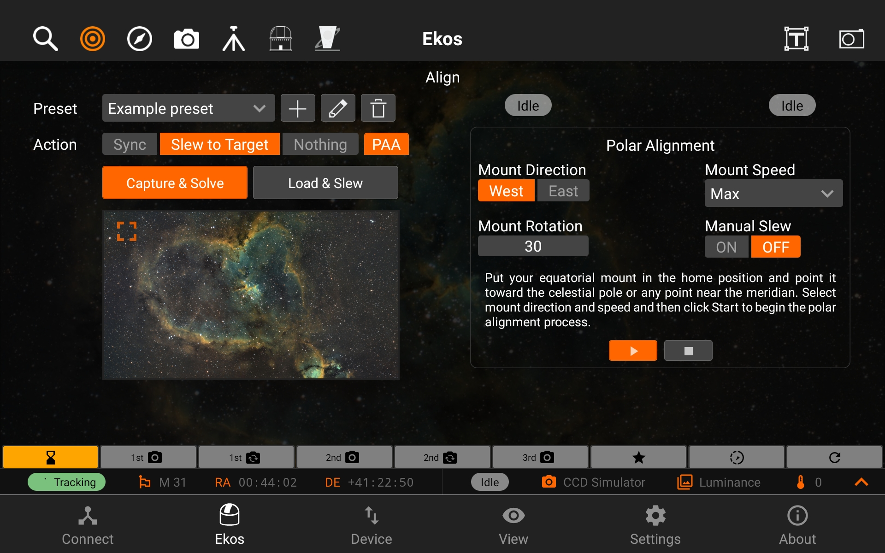
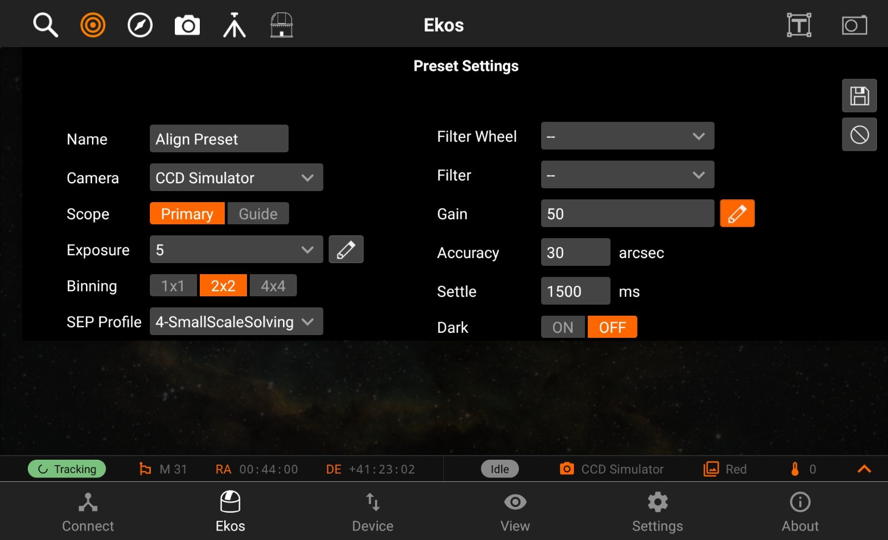
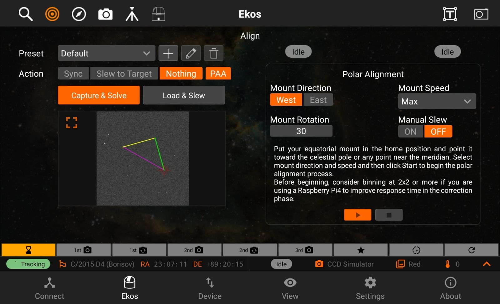
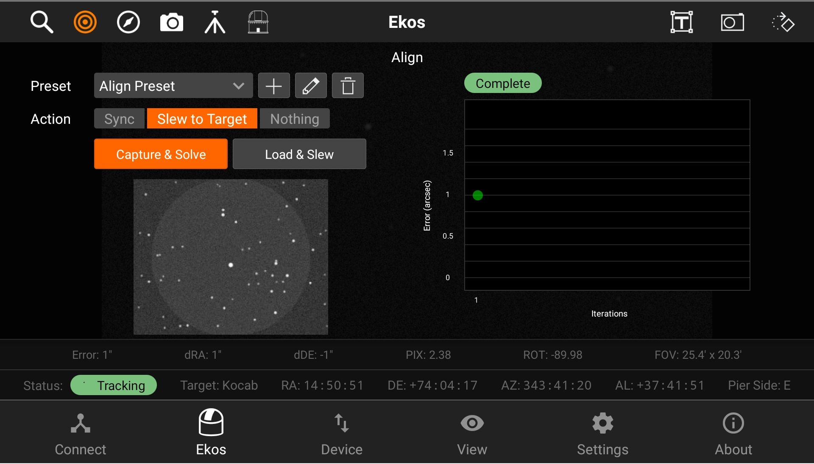
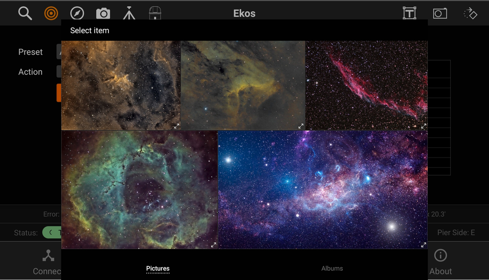

Align
The Align module enables highly accurate GOTOs and dead-center target images by utilizing plate-solving. The process starts with capturing an image and plate-solving it to get the exact sky coordinates. Once the coordinates are obtained, the mount is synchronized and then commanded to slew to the correct target position. This cycle repeats until the mount is within a few arcsecs from the target.
It has the following features:
- Presets: you can save an unlimited amount of presets, which have all the camera settings needed for alignment. You can also choose the scope and change the StellarSolver profile.
- Three Actions: sync, slew to target or do nothing.
- Polar Alignment Assistance
- Capture & Solve
- Load and Slew
- Image Viewer
- Alignment Plot

Preset Settings
You can add new preset, edit or delete presets, by tapping on the + button, the pencil button or the trash button.
Focus Presets has the following structure:
- Preset name
- Camera
- Scope
- Exposure
- Binning
- SEP Profile: the profile used for solving
- 1-FastSolving: solve images fast, but it does NOT do parallel solves.
- 2-ParallelSolving: It can be faster than FastSolving, but does not work nearly as well as the next 2.
- 3-ParallelLargeScale: This profile is meant to solve DSLR scale images very fast. It assumes larger image scales to solve faster than the above.
- 4-ParallelSmallScale: The DEFAULT for solving. This profile is meant to solve telescopic images quickly. Most users should probably use this one.
- Filter Wheel
- Filter
- Gain/ISO
- Accuracy: Acceptable difference between reported telescope coordinate and actual solved coordinates
- Settle: amount of time to allow mount to settle (in milliseconds)
- Dark Frame

Polar Alignment Assistance
To start the polar alignment process, open the polar alignment assistance by clicking on PAA button. Set the preferred settings and follow the intstructions at each step to complete the proces.

Once all 3 images have been captures, you are shown the correction vectors. At this point you can use the pinch or spread gesture to use zoom in or out as shown. The zooming feature also works while the image is minimized.
Capture & Solve
To start capturing and solving, just tap on the Capture & Solve button and the StellarMate will take care of the rest. When it's done, you will be able to see the current Alignment capture preview, alignment info on the solution bar on the bottom, and the points on the Alignment plot. The points on the alignment plot have 3 different colors: Red, Yellow and Green. If a point is red, that means that the error is 1.5 times or more above the accuracy value, if it's yellow, that means that the error is between 1 times to 1.5 times above the accuracy value, and finally, if it's green, that means that the error is within the accuracy value. The accuracy value can be changed in the preset settings.

Load and Slew
You can start a load and slew action by tapping on Load & Slew and selecting an image to slew to. StellarSolver is very accurate at this and will be able to slew to object in the image.
